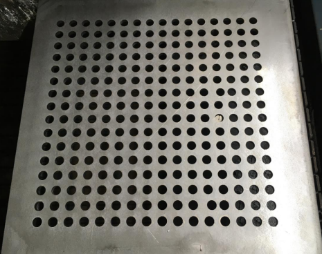
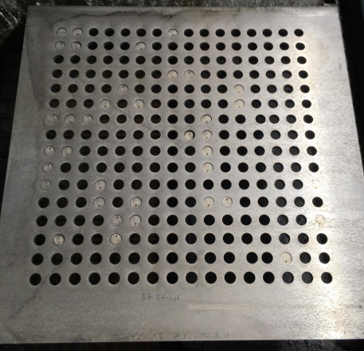
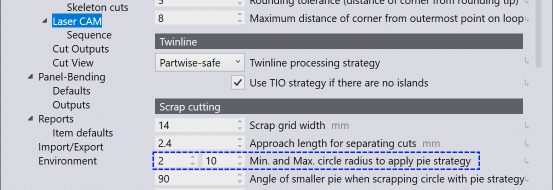

Pie-Slug Circular Holes
This is used for thick sheet optimization.

Figure 1. With pie-slugout strategy

Figure 2. Without pie-slugout strategy
Change the values of Min and Max circle radius for the pie strategy. 0 mm indicates this strategy is switched OFF.
